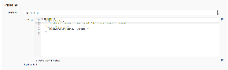
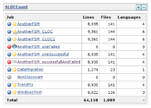
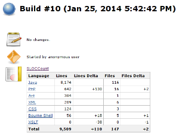
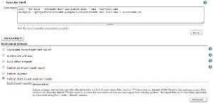
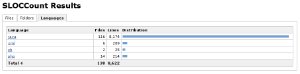
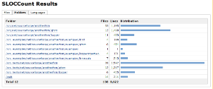
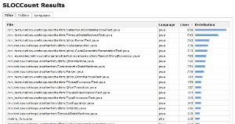
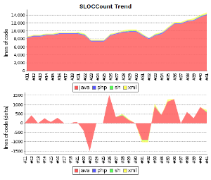
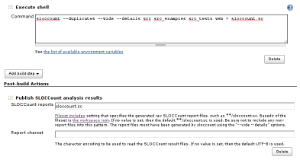

Plugin Information |
|---|
View SLOCCount on the plugin site for more information. |
Description
The SLOCCount plug-in scans for SLOCCount or cloc report files in the build workspace directory and reports the number of lines they found.
The following features are provided by this plug-in:
- Parsing of reports generated by SLOCCount tool.
- Parsing of reports generated by cloc tool.
- Configuration of the files to scan after a build.
- Trend reports showing the number of lines per language.
- Trend reports showing the number of added or deleted lines per language.
- Overview of the lines per file, folder or language.
- Dashboard View portlet showing number of lines, files and languages per job.
- Remote access API (REST API).
- Works with any project/job type.
This plug-in is developed and maintained by Nicolas Piguet. Please use the Mailing Lists or issue tracker to ask questions, create feature request or bug reports, since I don't read the comment section on this page regularly.
Screenshots
|  |  |  |  |

|
 |  |  |
|  |  | ||
Usage
If you are not sure which type of report files to use, prefer cloc. It is able to detect more programming languages than SLOCCount (Scala, Ant, CSS, ...) and is able to count also lines with comments that often contain Javadoc or Doxygen documentation. Cloc is also better portable, SLOCCount requires cygwin or similar environment under MS Windows.
Never switch between SLOCCount and cloc inside one job. You would end up with messy trend graph because they name programming languages differently. Delete all affected builds and rebuild the job in such case to fix the issue.
Linux
- Install SLOCCount or cloc on the build slave machine. Note they may be present in package repository of your distribution.
- Debian, Ubuntu, ...
apt-get install sloccountapt-get install cloc
- Red Hat, CentOS, Fedora, ...
yum install sloccountyum install cloc
- Debian, Ubuntu, ...
- For each job configuration page:
- Add a execute shell build step to generate the report files, or create them in your build scripts (Ant, Maven, Make, ...).
sloccount --duplicates --wide --details [source-folder] > [output-folder]/sloccount.sccloc --by-file --xml --out=[output-folder]/cloc.xml [source-folder]
- Activate the checkbox Publish SLOCCount analysis results and provide the path to the generated report files.
- Add a execute shell build step to generate the report files, or create them in your build scripts (Ant, Maven, Make, ...).
Windows
cloc
- Download and install cloc (cloc.exe) on the build slave machine. Optionally if you have Perl installed, you can run cloc as a standalone Perl Script.
- For each job configuration page:
- Generate the report files
cloc.exe --by-file --xml --out=[output-folder]/cloc.xml [source-folder]perl cloc.pl --by-file --xml --out=[output-folder]/cloc.xml [source-folder]
- Activate the checkbox Publish SLOCCount analysis results and provide the path to the generated cloc report.
- Generate the report files
SLOCCount
Since SLOCCount does not run on a native Windows machine the setup for Windows requires additional steps. Most of the setup is explained in detail in the SLOCCount documentation.
- Install Cygwin on the build slave.
- Compile and install SLOCCount within the Cygwin environment.
- For each job configuration page:
- Add a build step to run Cygwin and SLOCCount. See the ANT example below to learn how to start Cygwin and run SLOCCount from an ANT script.
/usr/bin/sloccount --duplicates --wide --details [source-folder] >[output-folder]/sloccount.sc
You must convert Windows paths that are passed as parameters to SLOCCount utility to Linux/Cygwin style (C:\ becomes /cygdrive/c/).
- Convert the SLOCCount results in sloccount.sc back to windows paths.
- Activate the checkbox Publish SLOCCount analysis results and provide the path to the generated SLOCCount report.
- Add a build step to run Cygwin and SLOCCount. See the ANT example below to learn how to start Cygwin and run SLOCCount from an ANT script.
If you uses sloccount for multiple jobs sometimes two jobs end at the same time and sloccount is executed simultaneously. This will fail since SLOCCount (by default) uses one temp data folder in $HOME/.slocdata.
Either change sloccount to not use a temp data directory or change the setup explanation so novice users (like me) are explained to use the --datadir option in order to get a datadir per hudson job.
This seems to work:
[ -d slocdata ] || mkdir slocdata
sloccount --datadir slocdata --details "your source path" > sloccount.sc
ANT example for Windows build
The target converts Windows paths to Linux style cygdrive paths (C:\ becomes /cygdrive/c/) before SLOCCount runs. The converted paths are passed as environment variables to Cygwin. After SLOCCount has been executed, the results in sloccount.sc are converted back to windows paths.
ANT target
Add this target to your Jenkins build:
<target name="sloccount" depends="createAllSrc">
<script language="javascript"> <![CDATA[
function winToCygdrivePath(cygProp, winProp) {
winPath = project.getProperty(winProp);
cygPath = winPath.replaceAll("C:", "/cygdrive/c").replace('\\', '/');
project.setProperty(cygProp, cygPath);
}
winToCygdrivePath("cygdrive.workspace.dir", "dir.workspace");
winToCygdrivePath("cygdrive.allsrc.dir", "dir.allsrc");
winToCygdrivePath("cygdrive.build.scripts.dir", "dir.build.scripts");
]]></script>
<exec executable="${cygwin.bin}\bash.exe">
<arg line="-li '${cygdrive.build.scripts.dir}/cygwin_sloccount.sh'" />
<env key="SLOCCOUNT_SOURCE_DIR" value="${cygdrive.allsrc.dir}" />
<env key="SLOCCOUNT_OUTPUT_DIR" value="${cygdrive.workspace.dir}" />
</exec>
<replace file="${dir.workspace}/sloccount.sc" token="/cygdrive/c" value="C:" />
<replace file="${dir.workspace}/sloccount.sc" token="/" value="\" />
</target>
You may have to adjust the paths used in the snippet, if your Jenkins workspace is on another drive than C.
Shell script
This shell script is called by Cygwin / ANT.
sloccount --duplicates --wide --details "$SLOCCOUNT_SOURCE_DIR" > "$SLOCCOUNT_OUTPUT_DIR/sloccount.sc"
Remote access API (REST API)
Use the URLs below to access the SLOCCount specific data.
Description of possibilities
Data
- http://SERVER/job/JOB_NAME/BUILD_NUMBER/sloccountResult/api/xml
- http://SERVER/job/JOB_NAME/BUILD_NUMBER/sloccountResult/api/xml?depth=1
- http://SERVER/job/JOB_NAME/BUILD_NUMBER/sloccountResult/api/json
- http://SERVER/job/JOB_NAME/BUILD_NUMBER/sloccountResult/api/json?depth=1
- etc.
Example of XML data:
<sloccountReportStatistics> <language> <files>7</files> <lines>513</lines> <name>xml</name> </language> <language> <files>116</files> <lines>8174</lines> <name>java</name> </language> <totalFiles>123</totalFiles> <totalLanguages>2</totalLanguages> <totalLines>8687</totalLines> </sloccountReportStatistics>
Example of JSON data:
{
"languages":
[
{"files":7,"lines":513,"name":"xml"},
{"files":116,"lines":8174,"name":"java"},
],
"totalFiles":123,
"totalLanguages":2,
"totalLines":8687
}
Support for cloc tool
Parsing of cloc XML reports is supported natively in the plugin from version 1.20.
Cloc (Count Lines of Code) is a tool similar to SLOCCount. It provides output to a XML file that can be simply transformed to the SLOCCount format and used in this plugin. Cloc is written in Perl and should be better portable than SLOCCount.
This howto was created and tested on Debian GNU/Linux, Jenkins 1.447, SLOCCount plugin 1.12, cloc 1.60 and xsltproc 1.1.28.
Install cloc and xsltproc
Download cloc from http://cloc.sourceforge.net/ and install it. You need also a whatever tool for XML transformations (xsltproc used) or you can try clokins tool (not tested at all). You can install the packages present in your GNU/Linux distribution.
# Debian/Ubuntu specific apt-get install cloc xsltproc
Script for XSLT transformation
Copy-paste the script below and store it to cloc2sloccount.xsl file accessible by your Jenkins server. If you are using master and slave machines, store the script to all slaves where the jobs are executed.
<xsl:stylesheet version="1.0" xmlns:de="." xmlns:xsl="http://www.w3.org/1999/XSL/Transform"> <xsl:output method="text" version="4.0" encoding="iso-8859-1" doctype-public="-//W3C//DTD XHTML 1.0 Transitional//EN" doctype-system="http://www.w3.org/TR/xhtml1/DTD/xhtml1-transitional.dtd"/> <xsl:template match="file"> <xsl:variable name="file_path" select="translate(@name,'\\','/')"/> <xsl:variable name="file_path_part1" select="substring-after($file_path,'/')"/> <xsl:variable name="module" select="substring-before($file_path_part1,'/')"/> <xsl:value-of select="@code"/> <xsl:text>	</xsl:text> <xsl:value-of select="@language"/> <xsl:text>	</xsl:text> <xsl:value-of select="$module"/> <xsl:text>	</xsl:text> <xsl:value-of select="@name"/> <xsl:text> </xsl:text> </xsl:template> <xsl:template match="files"> <xsl:apply-templates select="file"/> </xsl:template> <xsl:template match="cloc_url">For more details see: <xsl:value-of select="."/> <xsl:text> </xsl:text> </xsl:template> <xsl:template match="cloc_version">This report has been generated by cloc <xsl:value-of select="."/>.<xsl:text> </xsl:text> </xsl:template> <xsl:template match="header"> <xsl:apply-templates select="cloc_version"/> <xsl:apply-templates select="cloc_url"/> </xsl:template> <xsl:template match="results"> <xsl:apply-templates select="header"/> <xsl:text> </xsl:text> <xsl:apply-templates select="files"/> </xsl:template> <xsl:template match="/"> <xsl:apply-templates select="results"/> </xsl:template> </xsl:stylesheet>
Execute cloc
Change configuration of your job to execute the following shell script. Update the path to the directory where your source files are stored and optionally pass additional parameters to cloc. Then execute XSLT transformation on cloc output to get a SLOCCount compatible report.
cloc --by-file --xml -out=cloc.xml DIRECTORY xsltproc PATH/TO/cloc2sloccount.xsl cloc.xml > sloccount.sc
Enable SLOCCount publisher, enter path to the generated SLOCCount report and that's all.


Using the plugin within a Jenkins pipeline
Configure your pipeline in a similar way to this example:
node('master') {
stage ("Analyse") {
sh 'sloccount --duplicates --wide --details path-to-code/ > sloccount.sc'
}
stage ("Publish reports") {
sloccountPublish encoding: '', pattern: ''
}
}
Known Issues
Change Log
Version 1.24 (Dec 22, 2017)
- Fixed: Concurrent builds are serialized when publishing (JENKINS-43658)
Version 1.23 (Nov 26, 2017)
- Fixed: Lines and comments value are inversed in folders tab (JENKINS-37056)
Version 1.22 (Nov 12, 2017)
- Implemented: Support the new workflow/pipeline model (JENKINS-35234)
Version 1.21 (Nov 3, 2015)
- Implemented: Get total comment count in SloccountReportStatistics (JENKINS-31221).
- Only in cloc based reports, pull request by Jim SERRA.
Version 1.20 (Sep 6, 2014)
- Implemented: Native support for cloc tool (JENKINS-24602).
- Implemented: Folding help in configuration (JENKINS-24094).
- Implemented: Clean jelly code (JENKINS-24093).
- Implemented: Show statistics from last build on main job page (JENKINS-24021).
Version 1.19 (Apr 15, 2014)
- Fixed: Error 404 when trying to access language details for "C/C++ Header" (JENKINS-22597).
Version 1.18 (Apr 5, 2014)
- Implemented: Should have option to not care about build failure status (JENKINS-22303).
Version 1.17 (Apr 2, 2014)
- Unsuccessful.
Version 1.16 (Mar 14, 2014)
- Fixed: Lazy loaded report details are never released (JENKINS-21921).
- Fixed: Fix findings from FindBugs static analysis (JENKINS-22160).
- Implemented: Remote access API (REST API) (JENKINS-21922).
Version 1.15 (Feb 8, 2014)
- Fixed: Possibly too wide table on summary page (JENKINS-21557).
- Fixed: Sorting using Distribution column/graph doesn't work (JENKINS-21700).
- Implemented: Configurable Graph (JENKINS-21552).
- Implemented: New Modules panel on report page (JENKINS-21697).
Version 1.14 (Jan 26, 2014)
- Implemented: sloccount report formatting on build summary (JENKINS-13235).
- Implemented: Create a dash-board view portlet that shows the SLOC of the selected projectes (JENKINS-6876).
- Implemented: add a sloccount portlet to dashboard (JENKINS-12166).
- Rejected: Support multimodule sloccount report (JENKINS-13382).
Version 1.13 (Jan 24, 2014)
- Fixed: Unable to copy the sloccount summary when the job has been executed on a slave with a different OS (JENKINS-21467).
- Fixed: Link to workspace root directory is not accessible in results (JENKINS-21500).
- Implemented: Can this plugin support CLOC for even more languages and better Windows support (JENKINS-10274).
- Existing information in the task tested, a howto about cloc support written and added to wiki.
Version 1.12 (Jan 18, 2014)
- Fixed: Can't open sloccount table portlet (JENKINS-21419).
- Release for MS Windows, all long-term issues with Windows backslashes '\' in paths should be fixed now.
- Outdated information about plugin version <= 1.6 removed from wiki to clean it up.
Version 1.11 (Jan 15, 2014)
- Fixed: Memory consumption is huge (JENKINS-4769).
- Changes in data storage that heavily reduces memory consumption and increases performance during a common Jenkins use.
- Stored data now contains statistics per language (just several numbers), full report is lazy-loaded only while it is needed in the results page. Compare with parsing of giant XML that contains information about each source file present in your sandbox multiplied by number of builds just to show a simple trend graph.
- Data format is very different but the code should satisfy a backward compatibility, migration tested with plugin versions 1.8 and 1.10.
- The plugin update will have full impact after builds from a previous version will completely role out and only new data are present.
- Fixed: NoClassDefFoundError exception on job configuration page (JENKINS-19629).
- Fixed: Support for matrix projects (JENKINS-12816) and IVY projects (JENKINS-17024).
- All project types should be supported now.
- Unnecessary dependencies to Maven and FindBugs removed.
- Fixed: Summary is missing for the first build (JENKINS-20646).
- Fixed: Broken link in menu on the job page before the first build (JENKINS-21174).
- Fixed: Broken differences in build summary for failed builds (JENKINS-21223).
- Fixed: Possible resource leak in parser (JENKINS-21229).
- Fixed: Broken HTML code on results page (JENKINS-21230).
- Fixed: Graphical artifacts in the trend graphs (JENKINS-21258).
- Implemented: SLOCCount churn graph (JENKINS-14504).
- New trend graph with differences in lines count between current and previous build.
- Wiki updates - information, screenshots.
Version 1.10 (Apr 16, 2013)
- fixed java.io.InvalidClassException (JENKINS-14255).
- Made the plugin applicable for Job Generator jobs.
Version 1.8 (Jun 16, 2012)
- sloccount trend report only works up to last failed build (JENKINS-9309).
- SLOCCount plugin fails with Windows/Cygwin SLOCCount execution (JENKINS-4836).
Version 1.7 (May 19, 2012)
- String index out of range (JENKINS-13775).
- added Japanese localization.
- use commas in numbers for readability (JENKINS-13235).
- sort lines and files numerically.
- fixed breadcrumb move down.
Version 1.6 (Oct 19, 2011)
- Allow Maven support
Version 1.5 (Feb 14, 2011)
- Update link in help
- Translation updates (French, Dutch)
Version 1.4 (Feb 10, 2010)
- Update code for more recent Hudson
Version 1.3 (Jul 7, 2009)
- Made to work with distributed builds (patch)
Version 1.2 (Feb 28, 2009)
- Clicking on the SLOCCount icon in the left sidebar will now take you directly to the last build's detailed sloccount report instead of that build's general main page
Version 1.1 (Feb 24, 2009)
- Added breadcrumbs to help in the navigation of the result report
Version 1.0 (Feb 20, 2009)
- Initial release
{kind=link}
{kind=link}
{kind=link}
{kind=link}
{kind=link}
{kind=link}
{kind=link}
{kind=link}
{kind=link}
{kind=link}
{kind=link}
{kind=link}
{kind=link}